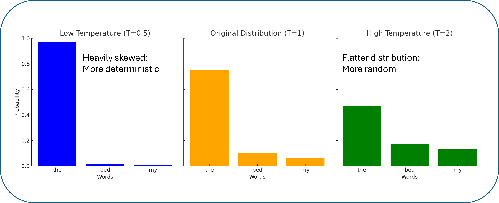

Overview of large language models
Large Language Models (LLMs) are at the forefront of natural language processing technology. This page offers a concise exploration into how LLMs function, their predictive capabilities, the intricacies of tokenization and context, and why they don't always produce the same results

How do LLMs work?
Large language models (LLMs) are advanced deep learning models designed to generate human-like language. They are trained on vast amounts of text, often sourced from publicly available internet resources. The training process has two main stages. First, LLMs are pre-trained on large generic datasets to predict the next word in a sentence. Then, they undergo fine-tuned with specific knowledge bases to enhance their performance or focus on specific tasks. You can find more details on fine-tuning LLMs found here.
LLMs: Predicting the next word
To understand how these models work, it's important to know what they take in and what they produce. Broadly, LLMs are trained to take a series of words as input and predict the next word as output. We can get a sense of this process using the Google Books Ngram Viewer. This online tool charts the frequencies of word sets based on printed sources published between 1500 and 2019.
Let's take the phrase "I go to ___." Even without additional data, you might guess "I go to school" or "I go to sleep." Now, let's see what the Google Books Ngram Viewer suggests for filling in the blank.
Based on this data, we can see that the most common word after "I go to" is actually "the," but "I go to sleep" is still in the top 5 phrases. We could continue by asking what word is most likely to follow "I go to the ___."
In this example, we're using a specific phrase and the Google Books Ngram dataset, but LLMs operate similarly with the data they are trained on. Generally, the process looks like this:
This kind of text prediction works not only with natural language but also with programming languages. This broadens LLMs' capabilities, enabling them to assist with coding as well as answering questions.
Tokenization and Context
In the example above, we used a series of words as input, but actually, the text first goes through a process called tokenization. During tokenization, text is broken down into smaller pieces called tokens, which can be individual words or sub-words. These tokens are then converted into numeric IDs. For instance, the word "talking" might be split into "talk" and "ing." On average, one token is roughly four English characters, so 100 tokens are about 75 words.
This process converts messy text data into a more structured format that the model can understand. It also helps the model define relationships between words because the numeric token IDs can be treated as coordinates, with the distance between them representing how related those words are. You can find a more detailed explanation of the role of tokenization in LLMs here.
Currently, LLMs have a limit on the number of tokens they can process at once, known as the context window. Larger context windows can help achieve better results. For example, we could extend our test phrase to, "I’m so tired from waking up at 5am every day that as soon as I get home, I go to ___." With this additional context, it makes more sense for the next word to be "sleep" or "bed."
The context window can also be thought of as how much the model can remember at once. For instance, you could start a chat session with an LLM and request it always respond with a haiku. However, if you have an extended conversation that exceeds the context window, the model would "forget" your request for haikus because it is no longer part of the context. Additionally, models are starting to allow uploads of files like PDFs, Word documents, or spreadsheets, which may also count towards the context window limit. Currently, GPT-4 has a context window of 32K tokens, and Claude has a context window of 200K tokens. As models improve, context windows are getting longer.
Why aren't LLMs deterministic?
One of the reasons you get different results each time you prompt an LLM is because modern LLMs use top-p or nucleus sampling. Top-p sampling works by defining a threshold probability, and tokens with a cumulative probability that exceeds this threshold form the "nucleus." The probabilities for these selected words are normalized so that their cumulative probability equals one, and then proportional sampling is used to choose the next word. This method allows for more diversity in text generation and is part of the reason why LLMs are not deterministic. By adjusting the cumulative probability threshold, the results can become more random or more predictable.
Another factor affecting the output generated by LLMs is the temperature setting, which helps control whether the output is more random or more predictable. The temperature setting accomplishes this by adjusting the distribution of probabilities. Temperature values range from zero to two, with lower values making the model more deterministic. If the temperature is set to zero, the token with the highest probability is always selected. This means, in the previous example, "the" would always be chosen. As the temperature approaches two, the differences in probabilities between the words in the nucleus are reduced, making them more equally likely to be chosen. You can find more details on top-p sampling and the temperature setting here.
Key takeways and definitions:
- During pre-training, LLMs are trained to predict the next word in a series
- Words are first converted to tokens with numeric IDs to create a structured input
- Each LLM will have a limit on the number of tokens it can accept/remember which is called the context window
- There are additional parameters such as top-p and temperature which control how random or deterministic the output is
- After pre-training, LLMs go through fine-tuning to improve model output or to focus on a specific task
Pre-training: Initial phase of training where a broad understanding of language is learned
Fine-tuning: Pre-trained models are further developed to focus on a specific task
Token: Input and output of LLMs which represent words, sub-words, or characters
Context window: The number of tokens a LLM can accept as input or remember
Top-P: Sampling method used by many LLMs where only tokens with a certain cumulative probability are considered
Temperature: A parameter in LLMs that controls the randomness of the generated responses